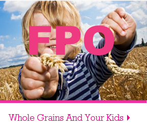
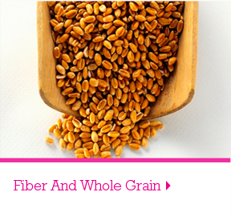

Big News from Big G Cereals:
Which Two Healthy Ingredients Do All Big G Kid Cereals Have In Common?
You may be surprised to learn that Big G Kid Cereals are the only leading line of kid cereals to have at least eight grams of whole grain* and a good source of calcium in every serving. Kids love the taste and you'll love that cereal with whole grain is good for them.
Cereal is one of the healthiest breakfast choices you can make for your kids. Ready-to-eat cereal has fewer calories than almost any other common breakfast option...Learn More
*All Big G cereals have at least 8 grams of whole grain per serving; at least 48 grams recommended daily.
Cereal Provides Important Nutrients
Cereal is one of the breakfast choices for your kids. Learn More
Cereal Provides Important Nutrients
Cereal is one of the breakfast choices for your kids. Learn More
Cereal Provides Important Nutrients
Cereal is one of the breakfast choices for your kids. Learn More


- 
- 